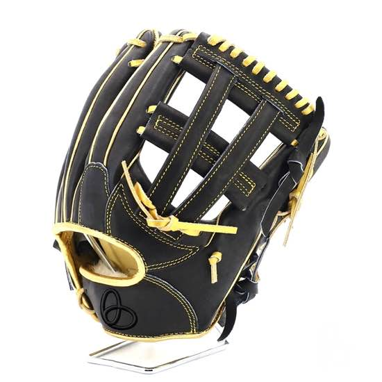
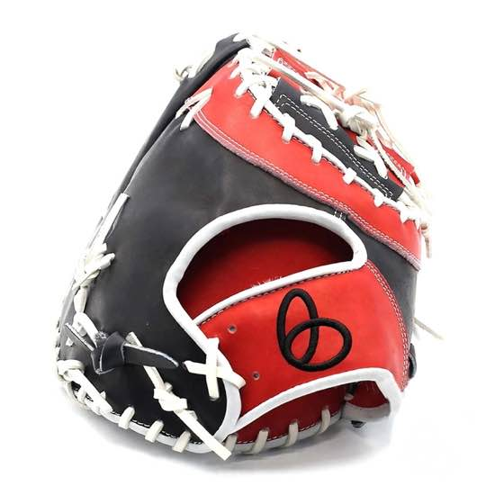
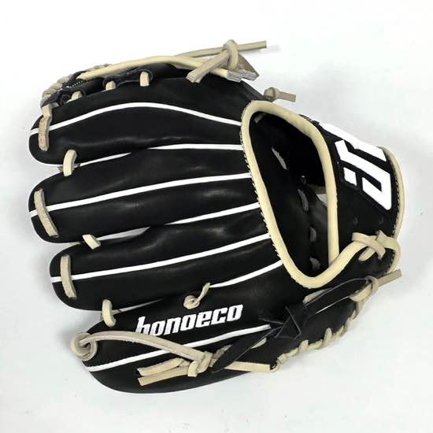

Baseball / infield
Infield Gloves
Quick transfers, precise control and classic V-web designs.
View gallery → BONOECO
BONOECOThe collection
Explore featured gloves. Contact us to confirm specifications, price, stock and delivery for your destination.
Browse the full glove gallery →

Baseball / infield
Quick transfers, precise control and classic V-web designs.
View gallery →
Baseball / outfield
Longer patterns and deep pockets for tracking and securing fly balls.
View gallery →
Baseball / pitcher
Web styles and glove details designed for pitcher preferences.
View gallery →
Baseball / catcher
Structured mitts with reinforced pocket construction for receiving.
View gallery →
Baseball / first base
Extended catching surface and a deep pocket for first-base play.
View gallery →
Baseball / training
Compact training patterns for fielding drills and skill practice.
View gallery →